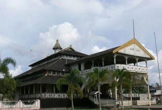

KALIMANTAN TENGAH
Kalimantan Tengah
Kalimantan Tengah adalah salah sebuah provinsi di Indonesia yang terletak di pulau Kalimantan. Ibukotanya adalah Kota Palangka Raya. Kalimantan Tengah memiliki luas 157.983 km² dan berpenduduk sekitar 2.202.599 jiwa, yang terdiri atas 1.147.878 laki-laki dan 1.054.721 perempuan (hasil Sensus Penduduk Indonesia 2010)
Rumah Adat
Rumah adat Kalimantan Tengah dinamakan Rumah Betang, Bentuk rumahnya panjang, bawah kolongnya digunakan untuk pertenun dan menumbuk padi dan dihuni oleh lebih kurang 20 kepala keluarga. Rumah terdiri dari 6 kamar antara lain untuk penyimpanan alat-alat perang, kamar untuk pendidikan gadis, tempat sesajian, tempat upacara adat dan agama, tempat penginapan dan ruang tamu. Pada kiri-kanan ujung atap dihiasi tombak sebagai penolak mara bahaya.
Pakaian Adat
Pakaian adatnya pria Kalimantan Tengah berupa kepala berhiasankan bulu-bulu enggang, rompi dan kain-kain yang menutup bagian bawah badan sebatas lutut. Sebuah tameng kayu hiasan yang khas bersama mandaunya berada di tangan. Perhiasan yang dipakai berupa kalung-kalung manik dan ikat pinggang. Wanitanya memakai baju rompi dan kain (rok pendek), tutup kepala berhiaskan bulu-bulu enggang, kalung manik, ikat pinggang dan beberapa gelang tangan.
Senjata Tradisional

Mandau
Di Kalimantan Tengah senjata tradisionalnya adalah mandau. Bagian hulunya dihiasi ukiran burung tinggang, sejenis burung enggang. Menurut kepercayaan mereka, burung tinggang adalah penguasa seluruh alam. Senjata terkenal lainnya adalah lunjuk sumpit, randu (sejenis tombak) dan perisai.
Alat Musik
.png)
Kecapi Sike
.png)
Bahalang
.png)
Balawung
.png)
Gandang
.png)
Garantung
.png)
Katambung
Tarian Daerah
.png)
Tari Dadas
.png)
Tari Kencet Papatai
.png)
Tari Pecuk Pina
.png)
Tari Serumpai
.png)
Tari Dadas
.png)
Tari Belian Bowo
Suku dan Bahasa
Suku : Dayak, Ngaju, Maanyan, Dusun, Lawangan Bukupai, Ot Danun, dan lain-lain. Bahasa Daerah : Dayak, Ngayu, Ot Danun, dan lain-lainnya.
Wisata
{kind=link}
Muara Teweh
Muara teweh adalah ibukota dari kabupaten barito utara yang mayoritas penduduknya berasal dari suku dayak bakumpai, seubetnis dayak yang mayoritas beragama islam. Kota ini terletak dipedalaman sungai barito , yang membelah pulau kalimantan dengan kota banjarmasin hingga kabupaten murung raya, kalimantan tengah.
NB : Terletak dipusat kota Teweh, 3 jam dari Palangkaraya
{kind=link}
Danau Tahai
Danau Tahai ,adalah sebuah danau kecil yang terdapat di Kota Palangkaraya. Keistimewaan kawasan wisata Danau Tahai lainnya adalah disediakannya jembatan-jembatan kayu yang mengelilingi areal hutan ini, sehingga pengunjung tidak perlu khawatir akan terendam air gambut. Di dalam hutan,pengunjung dapat menikmati sejuk dan segarnya udara hutan sambil mendengarkan merdunya kicauan burung-burung.
NB : Terletak dipusat kota Palangkaraya
{kind=link}
Taman Nasional Tanjung Puting
Taman Nasional Tanjung Puting adalah sebuah taman nasional yang terletak di semenanjung barat daya provinsi Kalimantan Tengah. Tanjung Puting pada awalnya merupakan cagar alam dan suaka margasatwa dengan luas total 305.000 ha yang ditetapkan oleh pemerintah Hindia Belanda pada tanggal 13 Juni 1936. Selanjutnya pada tanggal 12 Mei 1984 oleh Menteri Kehutanan, Tanjung Puting ditetapkan sebagai Taman Nasional luasnya menjadi 415.040 ha.
NB : Terletak di semenanjung barat palangkaraya, harus menaiki kendaraan pribadi sekitar 3,5 jam.
{kind=link}
Pantai Ujung Pandaran
Pantai Ujung Pandaran dengan hamparan pasir putih yang begitu luas, barisan pohon nyiur yang jika dilihat dari kejauhan seolah-olah memagari pantai ini, deburan ombak yang cukup besar, dan kekayaan biota laut khas pantai ini. Khusus untuk biota laut, di Pantai Ujung Pandaran banyak terdapat ubur-ubur, ikan pari, berbagai jenis ikan kecil yang hidup di terumbu karang, dan lain-lain.
NB : Berada di Sampit, selatan dari Palangkaraya.
{kind=link}
Arboretum Nyaru Menteng
Arboretum Nyaru Menteng adalah sebuah kawasan hutan yang di dalamnya terdapat banyak spicies flora dan fauna, yang menjadi objek wisata menarik di kota tersebut ,Di lokasi ini banyak terdapat koleksi kehutanan dengan berbagai jenis seperti tanaman geronggang, meranti, cemara, dan tampan ,terdapat juga proyek reintroduksi sekitar 200 ekor orangutan.
NB : Berada dipusat kota Palangkaraya, tinggal menaiki angkutan umum sekitar setengah jam.